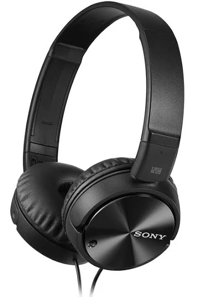

`
Les casques fillaires
L'un des meilleurs sur le marché est le
Casque d'écoute antibruit de Sony MDRZX110NC
Noter 4,5 étoiles sur 5 sur google!
Description :
- sensibilité : 110 dB/mW
- longeur : 1.2 m
- impédence : 45 Ohm
- fréquence de raisonnance : 10 - 22000 Hz
- couleur : noir
Atouts:
- tecnologie antibruit
- un grand confort (doté de coussins)
- son de grande qualité
